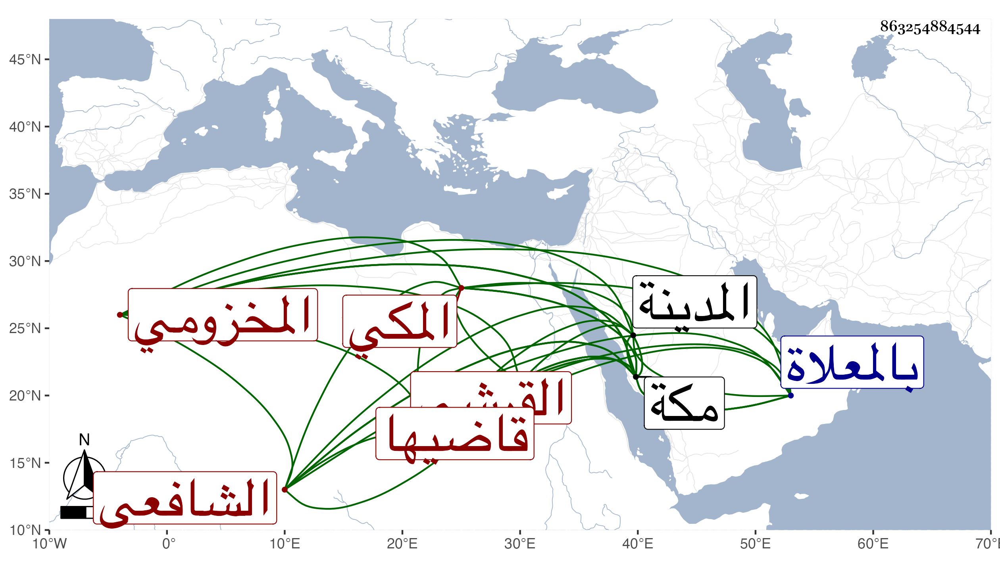

0902Sakhawi.DawLamic.ITO20230111-ara1.EIS1600.863254884544
Biography ID: 863254884544
523
أحمد بن محمد بن محمد بن محمد بن حسين بن علي بن أحمد بن عطية بن ظهيرة المحب أبو الطيب بن الجلال أبي السعادات القرشي المخزومي المكي قاضيها الشافعي وابن قاضيها ويعرف كسلفه بابن ظهيرة وأمه أم كلثوم ابنة العفيف عبد الله بن التقي الحراري . ولد في صفر سنة خمس وعشرين وثمانمائة بمكة ونشأ فحفظ القرآن وصلى به والأربعين النووية والعقائد النسفية وألفية ابن مالك والحاوي الصغير والمنهاج الأصلي والتلخيص والشاطبية وعرض في سنة تسع وثلاثين فما بعدها على التقي المقريزي ويحيى بن محمد المغربي الشاذلي والعلم أحمد الأخنائي وأبي القسم النويري المالكية والزين بن عياش وأبي شعر الحنبلي ومحمد بن إبراهيم العجمي والسفطي وابني الأقصرائي وابني الضياء ومحمود بن محمد بن أحمد الموسوي الخوافي وأجازوه إلا الثاني والثالث وأحضر على ابن الجزري وسمع على الشهاب المرشدي وأبي شعر والمقريزي وأبي المعالي الصالحي وأبي الفتح المراغي والأهدل والتقي بن فهد والشوائطي وابن الديري والمحب المطري والجمال الكازروني في آخرين بمكة والمدينة وبعض ذلك بقراءته وأجاز له التقي الفاسي وابن سلامة والنور المحلي والشمس الشامي والنجم بن حجي وابنا ابن بردس والقبابي والتدمري وعائشة ابنة ابن الشرائحي وآخرون منهم شيخنا وأخذ الفقه عن أبيه والكمال الأسيوطي بحث عليه جل الحاوي وأكثر ذلك بقراءته وقال أنها قراءة بحث وإجادة وإتقان وإفادة وأذن له في إقرائه وتدريسه بعد التحرير والمراجعة والتثبت والمطالعة والشمس بن عبد العزيز الكازروني بحثه عليه بتمامه وأذن له في إقرائه والشمس الأقفهسي قرأ عليه الأعلام بما يتعلق بالتقاء الختانين من الأحكام وتنوير الدياجير بمعرفة أحكام المحاجير كلاهما من تأليفه بحثا ومقابلة وأذن له أيضا في إقرائهما وروايتهما والمعاني والبيان عن الشمس بن سارة قرأ عليه التلخيص بتمامه وأذن له في إقرائه وقال أنها قراءة بحث وتحقيق وكذا أخذ في المعاني أيضا عن الكريمي وعنه وعن الأهدل وابن الهمام وأبي الفضل المغربي وابن قديد وأبي القسم النويري أخذ أصول الفقه بحث على ثانيهم فيه المنهاج وشرحه للأسنوي وعن الآخرين أخذ في العربية وكذا بحث على فقيهه ومؤدبه الشوائطي في أبواب من الألفية والملحة بحثا دل على سرعة فهم وجودة إدراك في آخرين وعن محمود الخوافي أخذ أصول الدين قرأ عليه العقائد للنسفي بحثا والتصوف عن البلاطنسي قرأ عليه بحثا منهاج العابدين للغزالي وقال أنها قراءة بحث اطلع بها على مقاصد الكتاب ووقف بها على ما فيه من اللباب وسمع عليه فاتحة العلوم للغزالي أيضا وأجاز له وناب في القضاء بمكة عن أبيه في سنة سبع وأربعين بإشارة صاحبنا النجم بن فهد ثم استقل به بعد وفاته إلى أن انفصل بابن عمه البرهاني ثم اعيد بعد مدة مع استمرار أموال الأيتام والغائبين تحت يد المنفصل بعد إحضارها ومشاهدتها ثم أضيف إليه نظر الحرم ورباط السدرة ورباط كلاله وميضأة بركة وقضاء جدة ، ثم انفصل عن كل ذلك بعد يسير إلى أن مات وقد درس وأفتى وحدث وصنف جزءا رد فيه على ابن عمه الخطيب فخر الدين أبي بكر أماكن من تصنيفه في الدماء وقفت عليه وكذا بلغني أن له غير ذلك وكان فاضلا فاهما جامد الحركة ناقص العبارة قاصر اليد والتودد حضرت بعض ختومه باستدعائه وسمعت كلامه وصاهر النجم المرجاني على ابنته واستولدها عدة أولاد . مات عن أكثرهم منهم أبو اليمن محمد الآتي . وكانت وفاته يوم الخميس تاسع صفر سنة خمس وثمانين ودفن على أبيه بالمعلاة بعد أن صلى عليه ابن عمه البرهاني بعد صلاة العصر قبالة الحجر الأسود كعادة بني مخزوم ونودي للصلاة عليه فوق قبة زمزم وكان الجمع في جنازته حافلا رحمه الله وإيانا .
